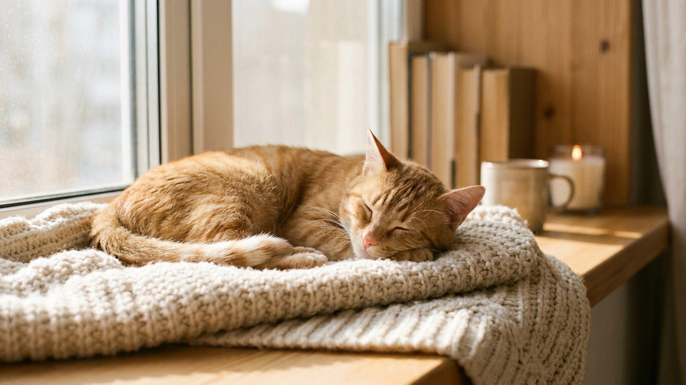

Аффенпинчер весит 3–4 кг, но понятия об этом не имеет. Порода сложилась в Германии несколько веков назад как рабочий крысолов, а не декоративный компаньон, и отсюда идёт характер: уверенный, упрямый, готовый облаять собаку в десять раз крупнее. Ниже всё, что нужно знать до покупки.
🐾 Ваш питомец — аффенпинчер?
Заведите профиль в AnimaLife: приложение запомнит породу, возраст и вес и будет подсказывать по уходу именно для неё. Вопросы AI-ветеринару — круглосуточно и бесплатно.
Завести профиль → Завести в MAX →
У вас iPhone? AnimaLife есть в App Store
Affenpinscher в переводе с немецкого буквально «обезьяний пинчер»: Affe (обезьяна) и Pinscher (терьер-крысолов). Короткая уплощённая морда, выдающаяся нижняя челюсть и торчащая шерсть вокруг глаз дают тот самый «обезьяний» силуэт, за который порода и получила имя. Это один из старейших той-пинчеров Европы: первые упоминания относятся к XVII веку, немецкий клуб собаководов зарегистрировал стандарт в 1902 году.
Изначально аффенпинчеры жили на конюшнях и в лавках, истребляя крыс и мышей. Только потом перебрались в дома как компаньоны. Рабочее прошлое до сих пор определяет характер породы.
Рост в холке 25–30 см, вес 3–6 кг. Корпус квадратный, компактный. Шерсть жёсткая, торчащая, слегка волнистая, чаще чёрная, реже рыжая или серая. Линяет мало, но требует тримминга 2–3 раза в год: без него шерсть не отмирает сама, а сваливается в колтуны. Расчёска нужна еженедельно, особенно «борода» и шерсть вокруг глаз.
Аффенпинчер живёт с ощущением, что он крупная собака. Бесстрашие укоренено в породе. Незнакомцев встречает настороженно, территорию охраняет серьёзно. На прогулке без поводка может броситься вслед за кошкой или вступить в конфликт с более крупной собакой.
С хозяином аффенпинчер очень привязан, игривый и смешной, не зря французы называли его «комнатным дьяволом». Любит быть в центре внимания, легко обучается трюкам, если видит в этом смысл. Упор на последнее: «если видит смысл».
Упрямство. Аффенпинчер быстро соображает, но легко отказывается выполнять команду, если не понимает зачем. Работает через игру и лакомство, жёсткая дрессировка только закрепляет сопротивление. Короткие сессии по 5–7 минут эффективнее долгих занятий. Ранняя социализация обязательна: щенок должен познакомиться с разными людьми, звуками и собаками до 4 месяцев.
Аффенпинчер хорошо живёт в паре с другими собаками, если вырос вместе с ними. С кошками уживается при правильном знакомстве. Маленьких грызунов воспринимает как потенциальную добычу. Крысиный инстинкт никуда не делся.
С детьми сложнее. Порода не подходит для семей с детьми до 7–8 лет: аффенпинчер плохо переносит резкие движения, громкие звуки и настойчивые объятия, может огрызнуться. Со старшими детьми, которые умеют уважать пространство собаки, ладит хорошо.
Кому подходит: активным людям в городской квартире, опытным владельцам маленьких пород, тем, кто готов тратить время на игровое воспитание.
Кому не подходит: семьям с маленькими детьми, тем, кто хочет послушную декоративную собаку, тем, кто часто и надолго уезжает.
Несмотря на малый размер, аффенпинчер нуждается в двух прогулках в день по 20–30 минут с возможностью побегать. Без нагрузки становится шумным и изобретательным в плане разрушений. Квартира подходит при условии регулярных выходов.
Ум породы требует занятости: хорошо работают нюховые игры, апортировка, обучение трюкам. Аффенпинчер азартен, и это можно использовать в воспитании.
Материал носит информационный характер и не заменяет очную консультацию ветеринара.
🐾 У вас аффенпинчер?
AnimaLife соберёт уход под породу: к каким болезням есть склонность, что проверять по возрасту, чем кормить и когда пора к врачу. Бесплатно, прямо в мессенджере.
Собрать план ухода → Собрать в MAX →
У вас iPhone? AnimaLife есть в App Store
🐾 Понравился разбор?
Подпишитесь на канал — каждый день разбираем по одному тревожному симптому у кошек и собак: что в пределах нормы, а когда пора к врачу. Подпишитесь, чтобы не пропустить разбор, который может спасти здоровье вашего питомца.